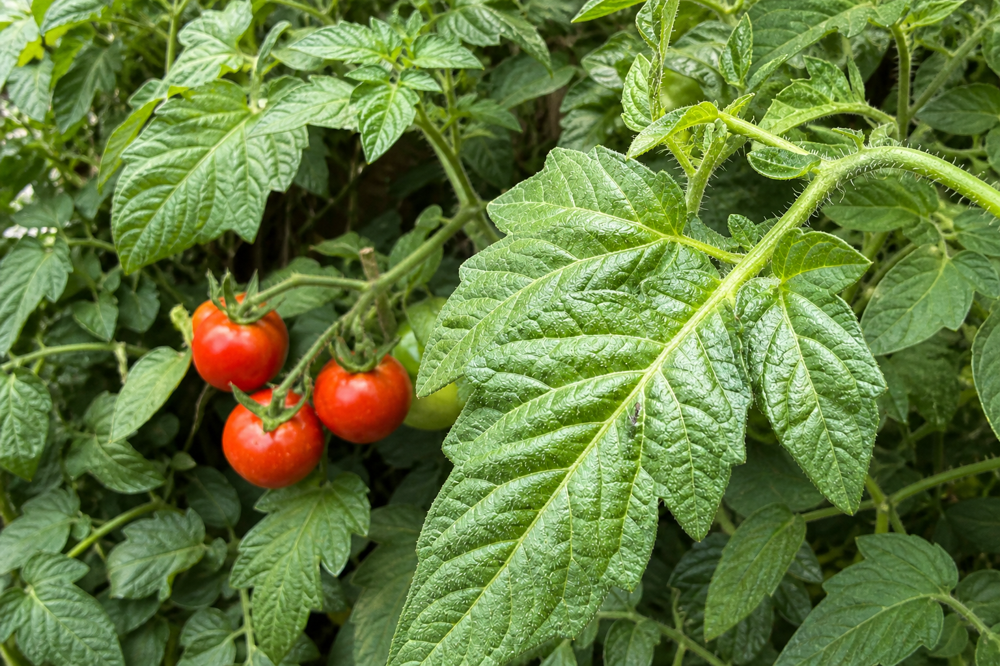

Solanum lycopersicum var. cerasiforme

Heritage & Use
Thought to be the direct ancestor of modern domesticated tomatoes, the Cherry Tomato originated in the coastal highlands of western South America. These resilient plants were first cultivated in Central America, where they evolved into the sweet, bite-sized treasures we enjoy today. In the kitchen, they are celebrated for their explosive flavor profile, ranging from honey-sweet to tangy-acidic, making them indispensable for Mediterranean salads, roasting, and fresh snacking.
Agricultural Profile
Life Cycle
Annual
Planting Time
Spring
Harvest
60-80 Days
Soil Pref.
Well-Drained
Care Requirements
Luminosity
Requires 6-8 hours of direct, unfiltered sunlight daily.
Hydration
Keep soil consistently moist but never waterlogged.
Climate
Thrives in temperatures between 21°C and 29°C.
Disease Management
Early Blight (Alternaria solani) causes dark, concentric ring lesions that resemble a target on the lower and older leaves. As the disease progresses, leaves turn yellow around the spots and eventually drop, reducing the plant's photosynthetic capacity and overall yield.
health_and_safety Solution
Remove and destroy infected leaves immediately. Apply copper-based or chlorothalonil fungicide on a 7–10 day schedule. Mulch the soil to prevent rain-splash spread, and water at the base rather than overhead. Rotate crops annually to break the disease cycle.
Late Blight (Phytophthora infestans) is one of the most destructive tomato diseases. It produces greasy, water-soaked lesions on leaves and stems that quickly turn dark brown. A white, cottony mold may appear on the undersides of leaves in humid conditions. It spreads extremely fast and can devastate an entire crop within days.
health_and_safety Solution
Remove and bag all infected plant material — do not compost it. Apply preventive fungicides (mancozeb or cymoxanil-based) before symptoms appear in high-risk weather. Improve air circulation by spacing plants adequately. Choose resistant varieties when available, and avoid working with wet plants to prevent mechanical spread.
Leaf Mold (Passalora fulva) is common in greenhouses or humid outdoor environments. The upper leaf surface shows pale green to yellow patches, while the corresponding undersides develop a distinctive olive-brown, velvety fungal coating. Severely affected leaves curl, wither, and drop prematurely.
health_and_safety Solution
Reduce relative humidity below 85% by improving ventilation. Avoid overhead irrigation — water at soil level only. Remove and dispose of infected leaves. Apply a suitable fungicide (thiram or chlorothalonil). In greenhouses, increase plant spacing and use horizontal airflow fans to keep foliage dry.
Tomato Yellow Leaf Curl Virus (TYLCV) is transmitted by the silverleaf whitefly (Bemisia tabaci). Infected plants display upward leaf curling, yellowing of leaf margins, and severe stunting. Flowers may drop without setting fruit, leading to near-total yield loss when infection occurs early in the plant's life.
health_and_safety Solution
There is no cure once a plant is infected — remove and destroy symptomatic plants promptly to prevent spread. Control whitefly populations using reflective mulches, yellow sticky traps, and insecticides (imidacloprid or spirotetramat). Use TYLCV-resistant tomato varieties whenever possible. Inspect transplants carefully before planting.